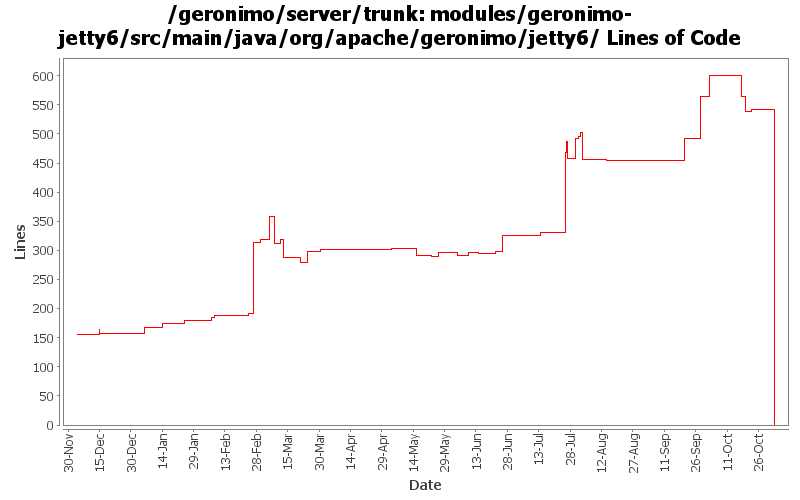

[root]/modules/geronimo-jetty6/src/main/java/org/apache/geronimo/jetty6
 cluster
(0 files, 0 lines)
cluster
(0 files, 0 lines)
 connector
(0 files, 0 lines)
connector
(0 files, 0 lines)
 handler
(0 files, 0 lines)
handler
(0 files, 0 lines)
 requestlog
(0 files, 0 lines)
requestlog
(0 files, 0 lines)

| Author | Changes | Lines of Code | Lines per Change |
|---|---|---|---|
| Totals | 190 (100.0%) | 1233 (100.0%) | 6.4 |
| djencks | 53 (27.9%) | 670 (54.3%) | 12.6 |
| jbohn | 10 (5.3%) | 267 (21.7%) | 26.7 |
| pmcmahan | 6 (3.2%) | 154 (12.5%) | 25.6 |
| vamsic007 | 3 (1.6%) | 40 (3.2%) | 13.3 |
| akulshreshtha | 8 (4.2%) | 38 (3.1%) | 4.7 |
| dims | 5 (2.6%) | 22 (1.8%) | 4.4 |
| gawor | 5 (2.6%) | 17 (1.4%) | 3.4 |
| gdamour | 2 (1.1%) | 13 (1.1%) | 6.5 |
| kevan | 57 (30.0%) | 4 (0.3%) | 0.0 |
| rickmcguire | 2 (1.1%) | 3 (0.2%) | 1.5 |
| dain | 3 (1.6%) | 3 (0.2%) | 1.0 |
| gregw | 3 (1.6%) | 2 (0.2%) | 0.6 |
| prasad | 33 (17.4%) | 0 (0.0%) | 0.0 |
GERONIMO-3565. Modules distributed amongst framework/modules and plugins
0 lines of code changed in 33 files:
updating remaining references NameFactory.TRANSACTION_MANAGER -> NameFactory.JTA_RESOURCE
1 lines of code changed in 1 file:
clean up GBeanInfo for Jetty6 Container GBean and add setStatsOn operation. Thanks to Viet Nguyen for pointing out the missing method
7 lines of code changed in 1 file:
GERONIMO-3393 externalize the connector attribute descriptions in TomcatManagerImpl so that they
can be changed outside the java source and translated if desired. Used the "Externalize Strings"
feature in Eclipse which generates the properties file and a ResourceBundle utility. It adds a
comment like "//$NON-NLS-1$" to mark lines that contain externalized strings.
For consistency also externalized the strings in JettyManagerImpl using this same utility.
48 lines of code changed in 2 files:
GERONIMO-3490 make JettyContainer and WebManagerPortlet utilize the LazyStatisticsProvider interface introduced in rev. 585308. Also updated to use setStartTime() and setLastSampleTime() from StatsImpl.
21 lines of code changed in 3 files:
GERONIMO-3490 Adding JSR77 stats for Jetty connectors. This a substantially modified version
of the patch submitted by Viet H. N.
0 lines of code changed in 2 files:
GERONIMO-2775 late binding of StatisticsHandler and removing from handler collection on stop, changing StatsOnMs to counter, and adding stats startTime and lastSample time to stats. I started with a patch from Viet Nguyen and then made a bunch of changes - thanks Viet
58 lines of code changed in 2 files:
GERONIMO-2775 Get Jetty Stats portlet working again. Merge of 580137 from branches/2.0
180 lines of code changed in 3 files:
GERONIMO-2964 Cannot specify the Tomcat work directory for a web application
o Committing GERONIMO-2964-trunk.patch submitted in the JIRA
o geronimo-web.xml can now have a "work-dir" tag to specify the work directory to be used by the application.
o For Tomcat this work directory will be relative to "catalina.home"
o For Jetty this work directory will be relative to jetty home which is var/jetty by default.
40 lines of code changed in 3 files:
call servlet.destroy() (GERONIMO-3414)
1 lines of code changed in 1 file:
GERONIMO-3407 cleanup
1 lines of code changed in 1 file:
GERONIMO-3407 stop using SubjectRegistrationLoginModule
1 lines of code changed in 1 file:
GERONIMO-3350 cleanup now-unused methods
1 lines of code changed in 1 file:
GERONIMO-3350 final touches on administration for web connectors
27 lines of code changed in 1 file:
GERONIMO-3350 more portlet updates for the new WebManager apis. Add getKeystorePass and getTruststorePass
to http11protocol interface to support editing HTTPS connectors from the portlet without losing the passwd.
More tweaking to the ConnectorAttributes for jetty, this still needs some work.
12 lines of code changed in 1 file:
GERONIMO-3350 updates to web connector portlet for recent api WebManager api changes. This work
is not complete yet but should allow others to work on the tomcat and jetty connectors with some
UI support. Creating and editing secure connectors in particular is still very fragile.
The basic UI with some input validation seems to work OK. Had to comment out some of the
connector attributes for the jetty connectors because the kernel thinks that they are not persistent
attributes when it tries to create a new connector, even though the gbean info looks to me like they
should be, needs more investigation.
66 lines of code changed in 1 file:
GERONIMO-3350 get rid of questionable getURLFor method
0 lines of code changed in 1 file:
GERONIMO-3350 Better lists of jetty connector attributes
19 lines of code changed in 1 file:
GERONIMO-3350 second steps, more jetty implementation
94 lines of code changed in 1 file:
GERONIMO-3350 first steps so others can start on tomcat and the console
83 lines of code changed in 1 file:
GERONIMO-3321. Pay attention to the weirdo jsp-property-group/url-pattern in the jetty deployer
5 lines of code changed in 3 files:
GERONIMO-3260 JettyFilterMapping should resppond to servlets being added and removed
59 lines of code changed in 1 file:
use InternalJettyServletHolder instead
13 lines of code changed in 1 file:
GERONIMO-3246 Cleanup exception handling so stack traces for first failures are not discarded.
3 lines of code changed in 2 files:
check for null
1 lines of code changed in 1 file:
GERONIMO-2687 Fix some problems with deregistering default and run-as subjects
0 lines of code changed in 1 file:
GERONIMO-2687. Don't construct default and run-as subjects, get them from a login module. Also creates a separate server-security-config for the security config stuff you probably want to change. Also fixes lots of security problems, including mdb run-as handling.
29 lines of code changed in 4 files:
Enabled AJP connector for jetty
3 lines of code changed in 1 file:
GERONIMO-3034 GERONIMO-2655 New SelectChannel and AJP connectors. Also hook the connectors up to our thread pool
4 lines of code changed in 1 file:
GERONIMO-2773 - Removed minThreads, tcpNoDelay attributes from JettyConnector, and added protocol, Mark AJP as unsupported protocol
13 lines of code changed in 1 file:
cleanup content-type stuff
1 lines of code changed in 1 file:
GERONIMO-3154 Implement security for jetty using only spec compliant jacc calls
4 lines of code changed in 1 file:
fix imports
1 lines of code changed in 1 file:
GERONIMO-3137 untested fix for jetty, rollback a leftover tx on exit
2 lines of code changed in 1 file:
GERONIMO-2898 Drop MinThread attribute of jetty connector from ConnectorPortlet
Update JettySecureConnector interface
4 lines of code changed in 1 file:
GERONIMO-3025 Don't reverse locale encoding mapping
1 lines of code changed in 1 file:
GERONIMO-2965 GERONIMO-3008 GERONIMO-3010 Tomcat annotation processing with lots of other improvements. Uses LifecycleProvider interface proposed in GERONIMO-3010
40 lines of code changed in 4 files:
GERONIMO-2949 get the jndi handler outside the context handler: GERONIMO-3000 provide default locale encoding mappings and mimetype mappings: this should fix 2999 for jetty, but I don't know how to test
42 lines of code changed in 3 files:
GERONIMO-2887 hook up listener destroy, clean up stuff a bit, depend on latest jetty build.
60 lines of code changed in 4 files:
GERONIMO-2687 Some experimental code got into jetty, make it so specifying run-as subject doesn't prevent deployment. (run-as NYI in openejb3, so I don't think its critical to make this part 'work' yet)
12 lines of code changed in 2 files:
(26 more)